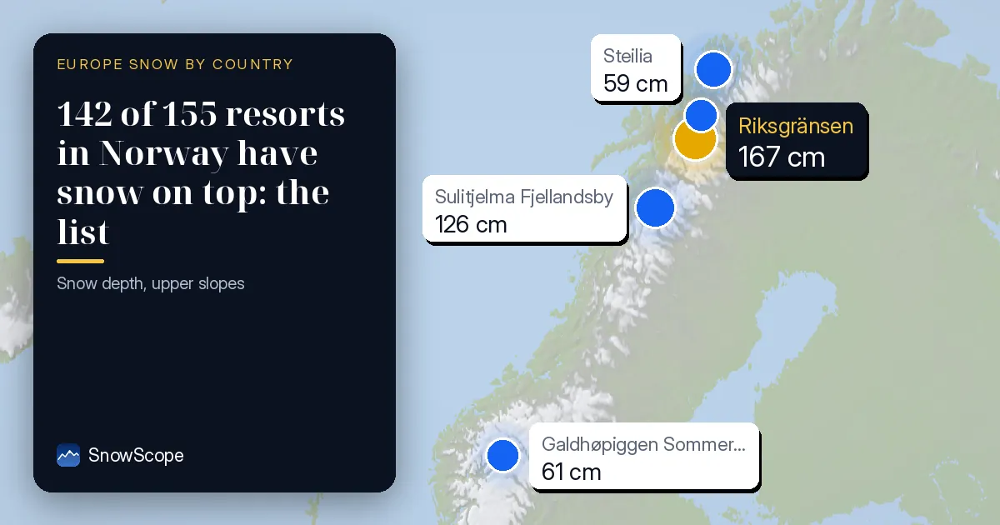
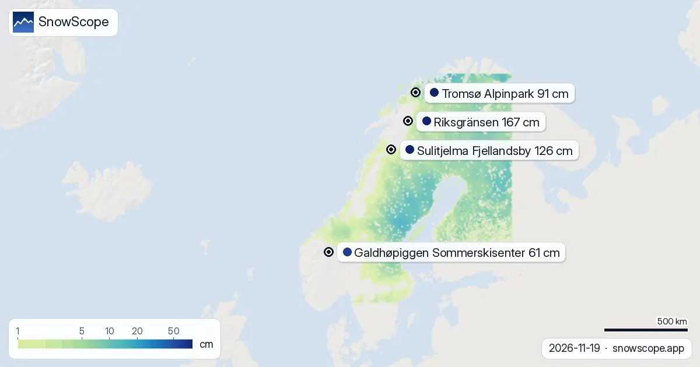
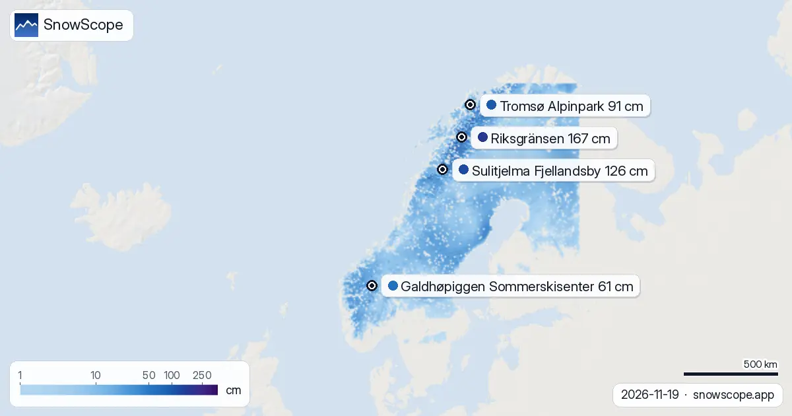

142 of 155 resorts in Norway have snow on top: the list
142 of the 155 resorts in Norway have snow on their upper slopes today. Riksgränsen leads with 55 cm.
See the live snow forecast for Riksgränsen in the SnowScope appSnow depth, powder alerts and the 3D map, free.
Which resorts have snow
Snow on the upper slopes is not the same as open runs: lifts open when the base is deep enough to groom, and the resort decides that.
Snow covers roughly 250,530 km² in Norway on 19 November, little changed from yesterday. In other words, 89 % of the mapped high ground is white.
| Resort | Snow depth | New snow, 72 h | Coming, next days | Top |
|---|---|---|---|---|
| Riksgränsen | 167 cm | 0 cm | 4 cm | 900 m |
| Sulitjelma Fjellandsby | 126 cm | 0 cm | 4 cm | 542 m |
| Tromsø Alpinpark | 91 cm | 6 cm | 16 cm | – |
| Galdhøpiggen Sommerskisenter | 61 cm | 0 cm | 7 cm | 2,180 m |
| Steilia | 59 cm | 1 cm | 4 cm | – |

Where to ski first
Riksgränsen leads with 167 cm on its upper slopes.
Close behind: Sulitjelma Fjellandsby (126 cm), Tromsø Alpinpark (91 cm), Galdhøpiggen Sommerskisenter (61 cm) and Steilia (59 cm).
Riksgränsen had no fresh snow in the last three days; 4 cm could fall by Sunday 22 November.
Sulitjelma Fjellandsby had no fresh snow in the last three days; 4 cm could fall by Sunday 22 November.
Snow lies on the upper slopes of 142 out of 155 resorts in Norway.
The rest of the shortlist: Tromsø Alpinpark: 91 cm on top, 6 cm in three days, 16 cm expected; Galdhøpiggen Sommerskisenter: 61 cm on top, 0 cm in three days, 7 cm expected; Steilia: 59 cm on top, 1 cm in three days, 4 cm expected.

How deep it is, height by height
Climb and the snow gets deeper: between 0 and 500 m, 8 cm on average, 80 % covered; between 500 and 1,000 m, 18 cm on average, 95 % covered; between 1,000 and 1,500 m, 24 cm on average, 100 % covered; between 1,500 and 2,000 m, 28 cm on average, 100 % covered; between 2,000 and 2,500 m, 40 cm on average, 100 % covered.
Forecast for the week
Expect up to 24 cm on the snowiest slopes by the third day; the seven-day total reaches 33 cm.
Saturday 21 November stands out, with up to 12 cm in a day.
Further out, days 8 to 14 show up to 25 cm on the snowiest slopes.
Seven days of snow cover
Day by day, the white area in Norway went: 16 November 246,310 km²; 17 November 246,210 km²; 18 November 249,960 km²; 19 November 250,530 km².
Riksgränsen has been the deepest resort every day this week.
On the ground
The new snow freshens the upper slopes; lower down it may already be heavy or wet.
Keep an eye on the forecast: the coming snow could change the picture quickly.
Today's snow cover
Snow lies right down to the lowlands and the coast. Over the week the white area has hardly moved from 250,760 km².
New snow in the last three days
In the last 72 hours the most new snow, up to 13 cm, fell over the Lyngen Alps.
In the past day, up to 4 cm was added.
At least 5 cm fell over some 46,820 km².
How this start compares
Resort by resort, today against a normal 19 November: Riksgränsen: 55 cm at about 708 m, against 61 cm in a normal year; Sulitjelma Fjellandsby: 48 cm at about 465 m, against 52 cm in a normal year; Tromsø Alpinpark: 17 cm at about 222 m, against 38 cm in a normal year; Galdhøpiggen Sommerskisenter: 31 cm at about 2,015 m, against 84 cm in a normal year.
0 of these 4 resorts are above their usual depth for the date.
These depths are for one height on each mountain, below the top, so they read lower than the upper-slope numbers further down.
In past winters the best snow at Riksgränsen usually came early April / mid-April.
The neighbours today
For comparison, the neighbours on the same day: Sweden: 87 % white, deepest Björkliden with 139 cm, up to 19 cm in the week ahead; Finland: 55 % white, deepest Salla with 25 cm, up to 13 cm in the week ahead.
Planning a day on the snow
Above 0 m the ground is almost fully white (80 % covered), so runs up there have a continuous base.
If you can choose the day, go after Saturday 21 November: the fresh snow then has time to settle and the roads to be cleared.
Tips for skiers
- Fresh snow on a cold base sticks badly: take care on steep slopes.
- Roads to the higher resorts may need winter tyres or chains.
- Read the local avalanche bulletin before going off-piste.
About these numbers
Resort snow depths are the deepest snow on the resort's upper slopes from the SnowScope snow model (about 1 km, run of 19 November); they are estimates for an area, not a measurement at one point. Station values are measurements on the date shown. Forecasts can change. Always read the official avalanche bulletin before going off-piste.
Cite this report
For research, teaching or the press: the numbers and charts are free to reuse under CC BY 4.0 with this citation.
SnowScope (2026), 142 of 155 resorts in Norway have snow on top: the list, https://snowscope.app/blog/en/2026/11/norway-resorts-with-snow-19-november-2026.html, accessed 2026-11-19
SnowScope (Atlas Labs). (2026, November 19). 142 of 155 resorts in Norway have snow on top: the list. SnowScope snow reports. https://snowscope.app/blog/en/2026/11/norway-resorts-with-snow-19-november-2026.html
BibTeX
@misc{snowscope2026norwayresortswithsnow19n,
author = {{SnowScope (Atlas Labs)}},
title = {142 of 155 resorts in Norway have snow on top: the list},
year = {2026},
month = nov,
howpublished = {\url{https://snowscope.app/blog/en/2026/11/norway-resorts-with-snow-19-november-2026.html}},
note = {Published 2026-11-19 13:11 UTC; accessed 2026-11-19}
}· CC BY 4.0 · Methods, data and tools →
Riksgränsen: snow and temperature by height, this winter vs last (tools) →
Follow Riksgränsen
Free: a message when fresh snow is coming, and the forecast every morning.
More snow reports

We compared the snow on 10 November with each winter's deepest snow at 46 ski resorts over 46 winters. A snowy start helps, but less than many skiers think.

79% of Sweden's ski areas show snow today. Upper slopes at Björkliden and Abisko carry 131 cm. The Hemavan fjells led the past 72 hours with 15 cm of fresh snow.

Poland's snow-covered area shrank from 1,300 to 710 km² in a week. Karpacz holds the deepest snow at 36 cm as of 17 November.